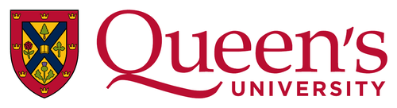
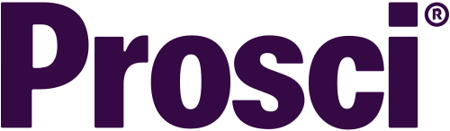

Clinical Informatics Leader
I’m Brittany — a health informatics and digital health leader with 8+ years leading Epic implementations, clinical workflow improvement, and technology initiatives across acute, pediatric, ambulatory, and community healthcare settings. I’m driven by patient and family centered care: making health information easier to access and healthcare better for everyone — and I care most about the part that actually sticks: adoption, workflows that make a clinician’s day easier, and changes that last after go-live.
Part of the Connect Care program from 2018 to 2025, working across many of its launches and phases — one of the largest clinical system implementations in the world, now live at 1,000+ sites with 125,000+ users. Read about Connect Care
Remediated more than 500 improperly processed patient referrals through workflow redesign, sustainable audit processes, and staff education, reducing processing errors and restoring compliance with urgent and routine referral processing standards.
Redesigned youth proxy access workflows in Epic and led governance for MyChart enhancements through a triple Epic upgrade.
Led Epic implementations at a 650-bed acute care hospital, a 141-bed pediatric hospital with 34 specialty clinics, and hundreds of ambulatory clinics across Calgary.
Fred Hutch Cancer Center · Seattle, WA
Jul 2024 – Sep 2025
Alberta Health Services · Calgary, AB
May 2023 – Jul 2024
Alberta Health Services · Calgary, AB
Nov 2020 – May 2023
Alberta Health Services · Calgary, AB
Oct 2018 – Nov 2020
Alberta Health Services · Calgary, AB

+2012 – 2017
Queen’s University · Kingston, ON

Prosci Change Management Certification (2017)